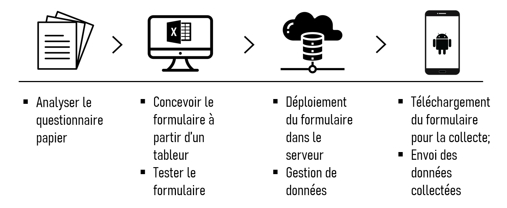

4 ODK, suite d’outils de collecte de données mobile
4.1 Introduction
ODK (Open Data Kit) est une suite d’outils open source qui permet de collecter, gérer et utiliser des données de manière efficace et sécurisée dans des environnements déconnectés. Les outils ODK fonctionnent sur des appareils mobiles Android et permettent aux utilisateurs de créer des formulaires de collecte de données personnalisés et de les utiliser sur le terrain pour collecter des données. Les données collectées sont stockées sur l’appareil mobile et peuvent être envoyées à une base de données centrale lorsque l’appareil est connecté à Internet. ODK est largement utilisé pour la collecte de données pour des projets de recherche, de développement et d’aide humanitaire.
Open Data Kit (ODK) a été créé en 2008 pour faciliter la collecte de données sur le terrain à l’aide d’appareils mobiles. Initialement développé par des chercheurs de l’Université de Washington, il a été largement adopté dans le domaine humanitaire et de la santé publique.
4.2 XLSForm ?
XLSForm est un standard open source utilisé pour créer des formulaires numériques compatibles avec la suite ODK. Il permet à des utilisateurs sans connaissances en programmation de créer des formulaires complexes en utilisant une feuille de calcul Excel standard. Les formulaires sont ensuite importés dans ODK Collect pour la collecte de données sur le terrain. Le standard XLSForm est très flexible et permet de personnaliser les formulaires en fonction des besoins spécifiques de chaque projet.
Tout ce qui sera vu dans cette formation est valable pour KoBoToolbox, SurveyCTO, Enketo, Formhub, CommCare et Magpi, car toutes utilisant le standard XLSForm.
4.3 La suite d’outils ODK
La suite ODK (Open Data Kit) est composée de plusieurs outils open source qui fonctionnent sur des appareils mobiles Android:
ODK Collect: Il s’agit de l’application principale qui permet de collecter des données à l’aide de formulaires personnalisés. Elle peut être téléchargée sur Google PlayStore.
ODK Build: Il s’agit d’un outil en ligne qui permet de créer facilement des formulaires personnalisés sans avoir besoin de compétences en programmation.
ODK Aggregate : C’est un serveur hébergé sur le cloud ou sur un serveur local qui permet de gérer et de stocker les données collectées. Nous verrons que nous pouvons aussi utiliser KoboToolBox pour stocker les données collectées.
ODK Briefcase : C’est un outil de transfert de données qui permet de récupérer les données collectées par ODK Collect et de les exporter vers ODK Aggregate ou vers d’autres applications de stockage de données.
ODKXLSForm Offline : C’est un outil pour transformer les fichiers Excel (xlsx) en fichier Xforms (XML)
Mettre des liens de téléchargement en bas de page
4.4 Avantages et inconvénients d’ODK Collect
Avantages:
Gratuit et open source
Facile à utiliser avec une interface utilisateur graphique
Prise en charge de nombreuses langues (permet une utilisation internationale)
Compatible avec toutes les versions d’Android
Bonne documentation et communauté active qui fournit un support technique
Personnalisable pour répondre aux besoins spécifiques des utilisateurs
Cependant, ODK présente également certains inconvénients :
Limité en fonctionnalités avancées par rapport à d’autres applications,
Le manque de sécurité, car les données peuvent être stockées en clair sur l’appareil mobile,
La configuration de la plateforme nécessite des compétences techniques de base pour les utilisateurs,
Peut être lent ou instable sur certains appareils,
Nécessite une connexion internet pour l’envoi des données collectées, ce qui peut poser des problèmes dans les zones où la connectivité est limitée.
4.5 Flux de travail
Dans la réalité, ce flux de travail n’est linéaire mais itératif.
